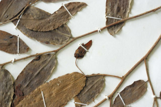
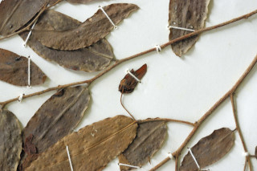

Shrubs or small trees, up to 7 m tall.
ಪೊದೆಗಳು ಅಥವಾ 7ಮೀ ಎತ್ತರದರವರೆಗೆ ಬೆಳೆಯುವ ಸಣ್ಣ ಮರಗಳು
7 മീറ്റര് വരെ ഉയരമുള്ള കുറ്റിച്ചെടികള് അല്ലെങ്കില് ചെറുമരങ്ങള്.
குத்துச்செடி அல்லது சிறிய மரம், 7 மீ. உயரம் வரை வளரக்கூடியது.
Young branchlets pubescent.
ಎಳೆಯದಾದ ಕಿರುಕೊಂಬೆಗಳು ಮೃದು ತುಪ್ಪಳದಿಂದ ಕೂಡಿರುತ್ತವೆ.
ഇളം ഉപശാഖകള് രോമിലമാണ്.
புதிதாகத் தோன்றிய சிறிய நுனிக்கிளைகள் உரோமங்களுடையது.
Leaves simple, alternate, distichous; petioles 0.1-0.2 cm long, pubescent; lamina 5-7 x 2-2.7 cm, ovate, glabrous above, pubescent beneath when young, apex acute to obtuse, base rounded; secondary_nerves ca. 12 pairs, faint; tertiary_nerves obscure.
ಎಲೆಗಳು ಸರಳ, ಪರ್ಯಾಯ ರೀತಿಯಲ್ಲಿ ಜೋಡಣೆಯಾಗಿದ್ದು ಕಾಂಡದ ಎರಡೂ ಕಡೆ ಎದುರು ಬದರಿನ ಲಂಬಸಾಲಿನಲ್ಲಿರುತ್ತವೆ.; ಎಲೆ ಪತ್ರಗಳು 5-7 × 2-27ಸೆಂ.ಮೀ. ಉದ್ದವಿದ್ದು ಅಂಡಾಕಾರ ಹೊಂದಿರುತ್ತದೆ. ಎಲೆಪತ್ರದ ಮೇಲ್ಭಾಗ ರೋಮರಹಿತವಾಗಿರುತ್ತದೆ. ಎಳೆಯದಾದ ಎಲೆಗಳ ತಳಭಾಗ ಮೃದು ತುಪ್ಪಳದಿಂದ ಕೂಡಿರುತ್ತದೆ; ಪತ್ರದ ತುದಿ ಚೂಪಾಗಿರುವುದರಿಂದ ಚೂಪಲ್ಲದವರೆಗಿನ ಮಾದರಿಯಲ್ಲಿದ್ದು ಎಲೆಬುಡ ಗುಂಡಾಗಿರುತ್ತದೆ; ಎರಡನೇ ದರ್ಜೆಯ ನಾಳಗಳು ಮಸುಕಾಗಿ ಕಾಣುವ ಸುಮಾರು 12 ಜೋಡಿಗಳಿರುತ್ತವೆ; ತೃತೀಯ ದರ್ಜೆಯ ನಾಳಗಳು ಅಸ್ಪಷ್ಟವಾಗಿರುತ್ತವೆ.
ലഘുവായ ഇലകള്, ഏകാന്തര ക്രമത്തില്, തണ്ടിന്റെ ഇരുഭാഗത്തു മാത്രമായടുക്കിയിരിക്കുന്നു; രോമിലമായ ഇലഞെട്ടുകള്ക്ക് 0.1 മുതല് 0.2 സെ.മീ. വരെ നീളം; പത്രഫലകത്തിന് 5 മുതല് 7 സെ.മീ വരെ നീളവും 2 മുതല് 2.7 സെ.മീ. വരെ വീതിയും, അണ്ഡാകാരം, മുകളില് അരോമിലവും ഇളതായിരിക്കുമ്പോള് കീഴെ രോമിലവുമാണ്, പത്രാഗ്രം നിശിതമോ മുനപ്പില്ലാത്തതോ ആണ്, പത്രാധാരം വൃത്താകാരത്തില്; ഉദ്ദേശം 12 ജോഡി അവ്യക്തമായ ദ്വിതീയ ഞരമ്പുകള്; ത്രിതീയ ഞരമ്പുകള് അപ്രസക്തമാണ്.
இலைகள் தனித்தவை, மாற்றுஅடுக்கமானவை, இருநெடுக்கு வரிசையிலையடுக்கம் (டைஸ்டிக்கஸ்); இலைக்காம்பு 0.1-0.2 செ.மீ. நீளம், உரோமங்களுடையது; இலை அலகு 5-7 X 2-2.7 செ.மீ., முட்டை வடிவம், மேற்பரப்பில் உரோமங்களற்றது, புதிதாகத் தோன்றிய இலையின் கீழ்பரப்பு உரோமங்களுடையது; அலகின் நுனி கூர்மையானது முதல் மழுங்கியது, அலகின் தளம் வட்டமானது, இரண்டாம் நிலை நரம்புகள் 12 ஜோடிகள், மெலிதானது; மூன்றாம் நிலை நரம்புகள் கண்களுக்கு புலப்படாது.
Flowers solitary, axillary, white, fragrant; pedicels 0.7-1.5 cm long, glabrous.
ಹೂಗಳು ಅಕ್ಷಾಕಂಕುಳಿನಲ್ಲಿ ಒಂಟಿಯಾಗಿರುತ್ತವೆ. ಹೂಗಳು ಶ್ವೇತಬಣ್ಣ ಹೊಂದಿದ್ದು ಸುವಾಸನಾಯುಕ್ತವಾಗಿರುತ್ತವೆ; ಹೂತೊಟ್ಟುಗಳು 0.7 ರಿಂದ 1.5 ಸೆಂ.ಮೀ. ಉದ್ದವಿದ್ದು ರೋಮರಹಿತವಾಗಿರುತ್ತವೆ.
സുഗന്ധമുള്ള, വെളുത്ത പൂക്കള് കക്ഷങ്ങളില് ഒറ്റക്കായുണ്ടാകുന്നു; പുഷ്പവൃന്തം അരോമിലം, 0.7 മുതല് 1.5 വരെ സെ.മീ. നീളം.
மலர்கள் தனித்தனியானது, இலைக்கோணங்களில் அமைந்தவை, வெண்மை நிறம், நறுமணம் நிறைந்தது; மலர்காம்பு 0.7-1.5 செ.மீ. நீளம், உரோமங்களற்றது.
Clustered 2-seeded berries, subglobose, 0.7-1.0 cm across, red, glabrous; stalk about 0.5 cm long.
ಬೆರ್ರಿಗಳು ಎರಡು ಬೀಜಗಳನ್ನೊಳಗೊಂಡಿದ್ದು ಗುಂಪಿನಲ್ಲಿರುತ್ತವೆ. ಬೆರ್ರಿಗಳು 0.7 ರಿಂದ 1.0ಸೆಂ.ಮೀ. ಗಾತ್ರ, ಕೆಂಪಾದ ಬಣ್ಣ, ರೋಮರಹಿತವಾದ ಮೇಲ್ಮೈ ಹೊಂದಿದ್ದು ಉಪಗೋಳಕಾರದಲ್ಲಿರುತ್ತವೆ; ಕಾಯಿತೊಟ್ಟುಗಳು ಸುಮಾರು 0.5ಸೆಂ.ಮೀ. ಉದ್ದವಿರುತ್ತವೆ.
2 വിത്തുള്ള, 0.7 മുതല് 1.0 സെ.മീ. ഒരെ, കുറുകേയുള്ള, ചുവന്ന, അരോമിലമായ ഉപഗോളാകാര, സരസഫലങ്ങള് കൂട്ടമായുണ്ടാകുന്നു; ഞെട്ടിന് ഏതാ് 0.5 സെ.മീ. നീളം.
கொத்தான இரண்டு விதையுள்ள முழுச்சதைகனி (பெர்ரி), கோளவடிவானது, குறுக்குவெட்டில் 0.7-1.0 செ.மீ., சிவப்பு, உரோமங்களற்றது, காம்பு சராசரியாக 0.5 செ.மீ. நீளம்.

 
